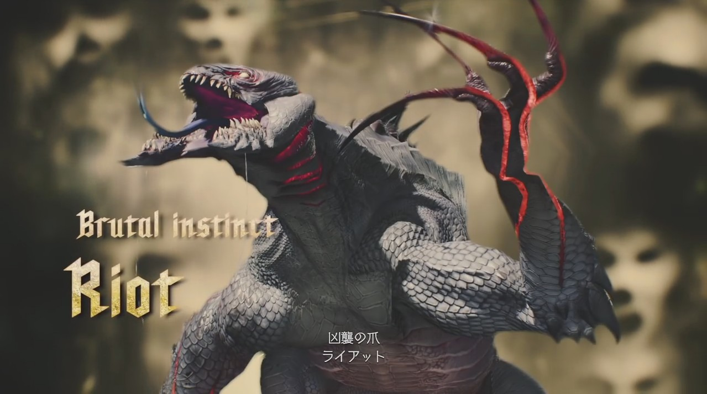

| 名前 | エンプーサ |
|---|---|
| 特徴 | デビルメイクライ5で最弱の敵。攻撃力、耐久力、攻撃頻度全てが弱く、普通に戦っていれば攻撃を受ける事はほとんどないはず。ただし数が多いので囲まれないようにするのが重要。 クリフォトに血を集めているという役割があり、周辺に血溜まりがあるとこれを吸いに高速で移動する事がある。 血を吸ったエンプーサは下半身についている大きな球形の部分が赤くなる。この状態のエンプーサを倒すとレッドオーブを大量に入手できる。 |
| 名前 | グリーンエンプーサ |
|---|---|
| 特徴 | 臀部が緑色のエンプーサで飛行している。緑色のものは仲間を癒す効果のある血液であり、他の敵に近寄ってこれを散らせて体力を回復させることがある。 回復させられると面倒なのでグリーンエンプーサがいる場合は最優先で倒そう。 |
| 名前 | レッドエンプーサ |
|---|---|
| 特徴 | 血を大量に摂取して突然変異化したエンプーサの希少種。耐久力が非常に高いが、こちらに攻撃を仕掛けてくることがなく逃げ回るのみ。 そして一定時間の間倒せないままでいると最後には地面に逃げ道を作って消えてしまう。 |
| 名前 | エンプーサクイーン |
|---|---|
| 特徴 | エンプーサの女王で他のエンプーサより遥かに巨体。その見た目通り耐久力も高く倒すのには時間がかかる。爪を振りかぶって攻撃してくるほか、捕獲してから血を吸う事もある。 この攻撃を最後まで食らってしまった場合、全身が赤くなって狂暴化し、攻撃頻度が高くなる。 地面に血だまりがある場合、それを吸う事もある。 |
| 名前 | ヘルカイナ |
|---|---|
| 特徴 | 大きな鎌を持った悪魔。エンプーサよりは強いがそれでもまだまだ弱い方。浮かせてしまえば空中コンボの良い練習台になる。 大鎌を地面に摺らせながら突進してきて鎌を振る攻撃の時、突進中は少しだけ攻撃に耐える性質になっている。 |
| 名前 | ヘルアンテノラ |
|---|---|
| 特徴 | 両手に大ナタを持った悪魔。ヘルカイナと似たような悪魔だが、こちらの方が遥かに強くて厄介な敵。最大の特徴はダウンする攻撃を当てた場合にいきり立って起き上がり、強烈な反撃をしてくるということ。 しかもこの時は攻撃してもひるませることができないので迎撃する事は難しく、基本的に避けるしかない。 |
| 名前 | ヘルジュデッカ |
|---|---|
| 特徴 | ヘルシリーズの最上位格とされる敵。両腕は伸縮自在で、遠距離から攻撃してくる。基本的にこちらから離れるように動き、ダウンさせてもすぐ瞬間移動して逃げてしまうので素早く倒すのは難しい。 しかし油断しているといきなり地面から現れて瞬間移動してくると同時に攻撃してきたりもする。瞬間移動して消えた後はジャンプして動き回り、動きを止めない方が良い。 地面に鎌を突き立てる動作を行うとヘル系の悪魔を召喚する。 |
| 名前 | ピロバット |
|---|---|
| 特徴 | 魔界の蝙蝠。口から炎を吐き出してくる。前兆として炎のエフェクトが出るのでわかりやすいが、炎の速度が速い上、群れて出現するのでダメージを受けがち。 体力は低いためネロならスナッチを使って引き寄せ手早く倒そう。 |
| 名前 | ヘルバット |
|---|---|
| 特徴 | ピロバットと違い全身が真っ赤な蝙蝠。ピロバットの上位で、耐久力がずっと高い。攻撃方法はやはり炎を吐き出してくるものだが、より強力になっている。体力が0になると背中にある燃焼器官が膨張し、最後には大爆発する。 膨らみ始めたらあとは勝手に自爆するので距離を離そう。この爆発では敵もダメージを受ける。 |
| 名前 | デスシザーズ |
|---|---|
| 特徴 | 真っ白い不気味な仮面をかぶり大ばさみを持つ、見るからに不吉な悪魔。浮いているうえに物体を透き通る性質があるため攻撃がしにくい。 ハサミによるガードが固く、こちらの攻撃を防いで、さらに弾いたときは反撃してくるのですぐにジャンプなどで回避しよう。 ハサミの攻撃を近接攻撃で弾いた場合、いつもは無表情な仮面が苦悶の表情になり、赤いオーラのようなものを放つ。 この時に攻撃を当てると一撃で倒せる。同じような弱点はDMC1でも存在した。 |

| 名前 | ライアット |
|---|---|
| 特徴 | 大きな爬虫類のような悪魔。飛び掛かってきての攻撃が回避しにくく、しかも複数で出現する事が多い。幸い、こちらの攻撃に対する抵抗は弱く一度空中に浮かせるとずっとコンボを継続して倒すことも出来る。 難易度DMDだとDTを発動させるのが早い特徴がある。 |

| 名前 | ケイオス |
|---|---|
| 特徴 | ライアットと同じく爬虫類型だが、より手ごわい。固い刃に身を包んでいる。高速回転しながら転がってくる攻撃を使い、こちらの攻撃が弾かれてしまう。背中に攻撃を加え続けると刃が壊れて弱体化する。こうなると浮かせる事も容易になる。 突進攻撃を滞空して回避し、隙に近づいて少しずつダメージを与えていこう。 |
| 名前 | ヒューリー |
|---|---|
| 特徴 | ボス除くエネミーの中では最強格の1体。瞬間移動しながらの攻撃を行い、これは出現を見てから回避する事は不可能なので動きのパターンを覚えるしかない。 しかも攻撃しても消えてしまいなかなかダメージを与えることも難しい。THE VOIDで慣れるまで相手をするのがお勧め。 |
| 名前 | スクードアンジェロ |
|---|---|
| 特徴 | 巨大な盾を持つ騎士。プロトアンジェロに従えられて出現する。 盾による防御は前面には強いが背後から攻撃すればいい。簡単に浮くので空中コンボで倒してしまおう。 |
| 名前 | プロトアンジェロ |
|---|---|
| 特徴 | スクードアンジェロを従える強力な魔界の騎士。DMC1のネロアンジェロの姿に似通っている。スクードアンジェロよりもはるかに耐久力があり、こちらの攻撃を弾くことも多い。 大剣による攻撃は破壊力にもリーチにも優れている。攻撃を仕掛けてきた時には近接攻撃で相殺すると隙が生まれる。 よろめいた時には浮かせる事もでき、一度浮かせればそのまま倒すことも可能。 |
| 名前 | バフォメット |
|---|---|
| 特徴 | 氷の魔法を使う悪魔。遠距離から氷を飛ばしてきたり地面から氷柱を突き出させる攻撃をしたりする。あちらから近づいてくることはないため積極的に倒しにいかないと遠距離からチクチクと攻撃されて厄介。 最優先で倒そう。耐久力はあまりない。 |
| 名前 | ルサキア |
|---|---|
| 特徴 | バフォメットの氷に対してルサキアは雷の魔法を操る。バフォメットよりも強く、バリアを張っている間は攻撃が通らない。 しかも頻繁に瞬間移動するため一気に倒すのは難しい。電撃弾は攻撃すると消す事が出来るが、ロックオン対象になるため非常に戦いの邪魔になる。 やはり最優先で倒す必要がある敵。 |
| 名前 | ベヒモス |
|---|---|
| 特徴 | 巨大な体をした悪魔。拘束具で動きが封じられているがダメージを与えていくとこれが破壊される。すると狂暴な本性を現し、暴走して走り回る。ベヒモスの突撃は他の悪魔もダメージを受ける。 拘束具が破壊された後は遠距離攻撃で大きなダメージを受ける特徴がある。 |
| 名前 | ノーバディ |
|---|---|
| 特徴 | DMC1にもいた得体の知れない悪魔。不気味な仮面をつける事があり、踊りでこちらのDTゲージを吸収する。攻撃手段も豊富でのけぞりにくいため強敵。 仮面をかぶっている間、近、遠距離武器のダメージを0.8倍に減少させる効果がある。 |

| 名前 | エルダーゲリュオンナイト |
|---|---|
| 特徴 | ブイが戦う事になるボス。体力は10000。デビルメイクライ3でもいた時間をスローにする力を持つ悪魔の馬「ゲリュオン」の上に、電撃を操る魔界の騎士のキャバリエーレアンジェロが乗っている。 キャバリエーレアンジェロは剣や電撃で攻撃をし、ゲリュオンは時間を操作してその回避を難しくしてくる。 |
| 名前 | キャバリエーレアンジェロ |
|---|---|
| 特徴 | ダンテ操作時に戦う事になるボス。体力は約10000。
ダンテより倍以上大きい巨体の人型のボス。魔帝ムンドゥスが創造した忘れ形見という設定。不完全な存在らしく、拠り所がないと機能しないが、代わりに条件を満たせば強力な悪魔となるらしい。 トリッシュが体内に囚われている。トリッシュは雷を扱う事ができる能力があるためその力を利用している。 攻撃は手に持つ長大な雷の剣を使ってのもの。剣は常に雷をまとっているが、攻撃を合わせる事で雷が掻き消えて弱体化する。瞬間移動する能力もあり、雷が消えた場合は一度距離を離してチャージ行動を行う。 |
| 名前 | アルテミス |
|---|---|
| 特徴 | ネロを操作して戦うことになるボス。体力は約10000。
紫色の光弾を羽から撃ち出して攻撃してくる。常に浮いていてしかもこちらからは距離を離そうとしてくるため、追いかけまわしながら戦う形になる。 アルテミスの中にはダンテの相棒であるレディがとらわれていた。 ある程度のダメージを与えるとダウンする事もあるのでその時は攻撃チャンス。体力が少なくなると各攻撃を何度も繰り出したり複合的に出してくるようになる。 |
| 名前 | ユリゼン |
|---|---|
| 特徴 | レッドグレイブ市に魔界の樹クリフォトを出現させ惨劇を引き起こした悪魔。Vによると、ネロの右腕を奪った犯人でもあるらしい。 魔王と呼ばれるが、依頼を持ちかけたV以外のデビルハンターの誰一人(魔帝から生み出された純粋な悪魔であるトリッシュでさえ)彼の存在や名前を知らなかった。 ユリゼン自身も名前など無いと自称しており、名前はVがダンテに告げた「お前の戦う理由(Your Reason)」をもじった通称である。 その正体は閻魔刀によって自らの 「人」と「魔」を切り離したバージルの「魔」の部分。「人」の部分がVである。魔界出身のトリッシュでさえその存在を知らなかったのは、本来なら存在するはずのない悪魔だったからである。 |